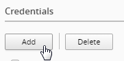

7.1. Lab Overview¶
Day 3, you get a little curious and wonder why both BIG-IP’s you’ve been working on say they’re managed by BIG-IQ (look near the red f5 ball on the top left of both BIG-IP’s). Unbelievable, all this time you’ve been configuring both devices independently when you could have been configuring them on a central management device.
Central Management Version - 6.0 was a major evolution of the BIG-IQ product line designed to become the primary source of centralized management for all physical and virtual F5 BIG-IP devices. BIG-IQ extends its offerings for security users, improving the user experience, and adding robustness and scale throughout the platform.
7.1.1. Base BIG-IQ Configuration¶
In this lab, the VE has been configured with the basic system settings and the VLAN/self-IP configurations required for the BIG-IQ to communicate and pass traffic on the network. Additionally, the Data Collection Device has already been added to BIG-IQ and the BIG-IP’s have been imported and have been gathering health statistics. They have not however had their configurations imported.
7.1.2. New features¶
STATISTICS DASHBOARDS –
This is the real first step managing data statistics using a DCD (data collection device) evolving toward a true analytics platform. In this guide, we will explore setting up and establishing connectivity using master key to each DCD (data collection device).
- Enabling statistics for each functional area as part of the discovery process. This will allow BIG-IQ to proxy statistics gathered and organized from each BIG-IP device leveraging F5 Analytics iApp service (https://devcentral.f5.com/codeshare/f5-analytics-iapp).
- Configuration and tuning of statistic collections post discovery allowing the user to focus on data specific to their needs.
- Viewing and interaction with statistics dashboard, such as filtering views, differing time spans, selection and drilldown into dashboards for granular data trends and setting a refresh interval for collections.
Auto-scaling in a VMware cloud environment
You can now securely manage traffic to applications in a VMware cloud environment, specifying the parameters in a service scaling group to dynamically deploy and delete BIG-IP devices as needed. BIG-IQ manages the BIG-IP devices that are load balancing to the BIG-IP VE devices in the cloud, as well as to the BIG-IP devices’ application servers.
Auto-scaling in an AWS environment
You can now securely manage traffic to applications in a VMware cloud environment, specifying the parameters in a service scaling group to dynamically deploy and delete BIG-IP devices as needed. You can manage the BIG-IP VE devices from a BIG-IQ system on-premises, or in the cloud. You have the option to use an F5 AWS Marketplace license, or your own BIG-IP license.
BIG-IQ VE deployment in MS Azure
You can now deploy a BIG-IQ VE in a MS Azure cloud environment.
Intuitive visibility for all managed applications
BIG-IQ now provides an overview of all managed applications with the option for a more detailed view of each application. Both the overview and detailed views provide information about the application’s performance, Web Application Security status, and network statistics.
Easy application troubleshooting based on application traffic and security data
You can now enable enhanced analytics to view detailed application data in real-time, which allows you to isolate traffic characteristics that are affecting your application’s performance and security status.
Real-time notifications for monitored devices and applications
You can now receive real time alerts and events for BIG-IP devices and their connected applications. These notifications are integrated into the BIG-IQ UI charts and allow you to pinpoint activities that are currently affecting your application.
Enhanced HTTP and Web Application Security visibility for all applications
You can use the HTTP and Web Application Security Dashboards to monitor all applications managed by BIG-IQ Centralized Management. These dashboards allow you to compare applications, pool members, and other aspects of traffic to your applications. In addition, the enhanced view includes real time events and alerts within the charts, and enhanced analytics data.
Added object and management support for DNS features
Creating, reading, updating, and deleting DNS GSLB objects, and listeners is now supported from the BIG-IQ user interface and the API.
Visibility into managed service scaling groups
An automatically scalable environment of BIG-IP VE devices can be defined to provide services to a set of applications. System administrators of BIG-IQ Centralized Management can monitor performance data for these BIG-IP VE devices.
Enhanced DNS visibility & configuration
BIG-IQ provides the ability to configure and have an enhanced view into DNS traffic, which now includes both peak traffic values and average traffic values over a selected period of time.
Application templates
Enhanced application/service templates that make deployments simple and repeatable.
Security policies and profiles available in applications
You can now add security policies and profiles to applications, including Web Application Security policies, Network Security firewall policies, DoS profiles, and logging profiles.
Automatically deploy policy learning
You can now enable automatic deployment of policy learning using Web Application Security.
Extended ASM/advanced WAF management that includes
- Auto-deploy policy learning
- Brute-force attack event monitoring
- Event correlation
- Manage DataSafe profiles
- Initial ASM and HTTP monitoring dashboards
Enhanced AFM Management
- AFM and DoS event visualization
- Multi device packet tester
- Enhanced debugging
APM enhancements
- Management capabilities for APM Federation through BIG-IQ (SAML, IdP and SP)
- Management capabilities for APM SSO configuration for Web Proxy Authentication Support Through BIG-IQ
Manage cookie protection
You can now manage cookie protection for BIG-IP devices using Web Application Security.
Monitoring dashboard for Web Application Security statistics
You can review Web Application Security policy statistics using a graphical dashboard.
Manage DataSafe profiles
You can now manage DataSafe profiles using Fraud Protection Security.
Enhanced support for NAT firewalls
You can now use the enhanced NAT firewall support in Network Security.
Subscriber support in firewall rules
You can now add subscriber IDs and groups to firewall rules in Network Security for BIG-IP devices that support them.
Firewall testing using packet flow reports
You can now create and view packet flow reports to test firewall configurations in Network Security.
Support for multiple BIG-IP devices with packet tester reports
You can now select multiple BIG-IP devices when generating packet tester reports in Network Security.
Renaming of firewall objects supported
You can now rename firewall objects, such as firewall policies in Network Security.
Enhanced support for DoS profiles, device DoS configurations, and scrubber profiles
You can now manage additional features of DoS profiles, device DoS configurations, and scrubber profiles that are found in BIG-IP version 13.1, such as new vectors, stress-based mitigation, DNS dynamic signatures, and VLAN support in scrubber profiles.
Copying device DoS configurations
You can now copy device DoS configurations from one BIG-IP device to multiple BIG-IP devices with the same version.
Viewing logs for DoS and firewall events in the user interface
You can now configure and view logging of DoS and firewall events, and for DoS events, see that information in a graphical format.
Additional details can be found in the full release notes:
BIG-IP Versions AskF5 SOL with this info:
https://support.f5.com/kb/en-us/solutions/public/14000/500/sol14592.html
7.2. Changes to BIG-IQ User Interface¶
The user interface in the 6.0 release navigation has changed to a more UI tab-based framework.
In this section, we will go through the main features of the user interface. Feel free to log into the BIG-IQ (https://192.168.1.50) username: admin password: 401elliottW! device to explore some of these features in the lab.
After you log into BIG-IQ, you will notice:
- A navigation tab model at the top of the screen to display each high level functional area.
- A tree based menu on the left-hand side of the screen to display low-level functional area for each tab.
- A large object browsing and editing area on the right-hand side of the screen.

- Let us look a little deeper at the different options available in the bar at the top of the page.

- At the top, each tab describes a high-level functional area for BIG-IQ central management:
- Monitoring –Visibility in dashboard format to monitor performance and isolate fault area.
- Configuration – Provides configuration editors for each module area.
- Deployment – Provides operational functions around deployment for each module area.
- Devices – Lifecycle management around discovery, licensing and software install / upgrade.
- System – Management and monitoring of BIG-IQ functionality.
- Applications – Build, deploy, monitor service catalog-based applications centrally.
WORKFLOW 1: Creating a Backup Schedule
BIG-IQ is capable of centrally backing up and restoring all the BIG-IP devices it manages. To create a simple backup schedule, follow the following steps.
Click on the Back Up & Restore submenu in the Devices header.
 Expand the Back Up and Restore menu item found on the
left and click on Backup Schedules
Expand the Back Up and Restore menu item found on the
left and click on Backup SchedulesClick the Create button
- Fill out the Backup Schedule using the following settings:Name: NightlyLocal Retention Policy: Delete local backup copy 1 day after creationBackup Frequency: DailyStart Time: 00:00 Eastern Daylight TimeDevices: Groups (radio button): All BIG-IP Group DevicesYour screen should look similar to the one below.
{kind=link}
 **
**
**
**
- Click Save & Close to save the scheduled backup job.
- Optionally feel free to select the newly created schedule and select
“Run Schedule Now” to immediately backup the devices.
- Add a Name for the Back Up
- Click Start
- When completed the backups will be listed under the Backup Files section
BIG-IQ can now push qkviews from managed devices to ihealth.f5.com and provide a link to the report of heuristic hits based on the qkview. These qkview uploads can be performed ad-hoc or as part of a F5 support case. If a support case is specified in the upload job, the qkview(s) will automatically be associated/linked to the support case. In addition to the link to the report, the qkview data is accessible at ihealth.f5.com to take advantage of other iHealth features like the upgrade advisor.
- Navigate to Monitoring Reports Device iHealth Configuration
{kind=link}
- Add Credentials to be used for the qkview upload and report retrieval.*If you do not have credentials, please raise your hand and speak to an instructor* Click the Add button under Credentials.
- Fill in the credentials that you used to access https://ihealth.f5.com:Name: Give the credentials a name to be referenced in BIG-IQUsername: <Username you use to access iHealth.f5.com>Password: <Password you use to access iHealth.f5.com>

Click the Test button to validate that your credentials work.
Click the Save & Close button in the lower right.
Click the QKview Upload Schedules button in the BIG-IP iHealth menu.
{kind=link}
Monitoring Reports Device iHealth QKView Upload Schedule
- Click Create with the following values
- Name – Weekly Upload
- Description – Nightly QKView Upload
- Credential – (use what was created in step 3)
- Upload Frequecny – Weekly (Select Sunday)
- Start Time – Select todays date at 00:00
- End Date – No End date should be checked
- Select both devices
- Click the right arrow to move to the “Selected” Area
- Click Save & Close

You will now have a fresh set of QKView in iHealth every Sunday morning. This is extremely useful for when new cases are opened, one less step you’ll need for support to engage quicker.
WORKFLOW 3: Device Import
BIG-IQ is capable of centrally managing multiple products, for this lab we will only manage LTM and AFM. To import the device configurations, follow the steps below
- Navigate to the Devices tab and click on BIG-IP Devices (left panel)

- You’ll notice both devices have not completed the import tasks, to remedy this simply click on the “Complete Import Tasks” Link
- First Re-discover the LTM service
- Then Discover the AFM service
- Once Re-discovery has completed, import both the LTM and AFM services
- Repeat this same procedure for both devices, once completed your
screen will show the following.
- For any conflicts you may encounter – leave BIG-IQ selected resolution

7.3. BIG-IQ Statistics Dashboards¶
Navigate to Monitoring Dashboards Device Health
{kind=link}
- You can narrow the scope of what is graphed by selecting a object or objects from the selection panels on the right. For example, if you only want to see data from BIG-IP01, you can click on it to filter the data.

You can create complex filters by making additional selections in other panels
- You can zoom in on a time, by selecting a section of a graph or moving the slider at the top of the page
 or
or All the graphs update to the selected time.
- You can change how far in the data you want to look back by using the selection in the upper left (note you may need to let some time elapse before this option becomes available)

{kind=link}